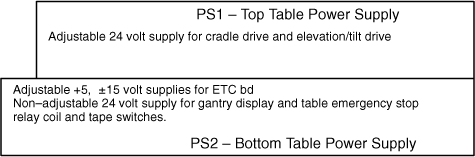
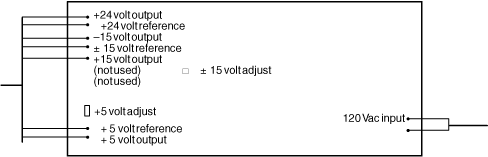

Operating Documentation
Direction 5114043-800, Rev# 9
LightSpeed 3.X Service Methods (Advanced)
Operating Documentation |
Illustration 1: GANTRY POWER SUPPLIES WITH A PERFORMIX TUBE

Turn OFF the Axial Enable and HVDC switches on the STC backplane.
Table 1: OBC and Table Power Supplies
| NON-ADJUSTABLE SUPPLIES | ADJUSTABLE SUPPLIES |
|---|---|
| OBC +24 | ETC,OBC, +5, ±15 |
| Table (Display, Emergency Stop) +24 | Table (Cradle Drive, Relays) +24 |
| Filament Supply +30 | Data Communication +12 |
| Tilt/Elevation +170 | DAS +5, ±5 |
| Collimator/Detector Heater +24 |
Illustration 2: Table Power Supplies (Left View)

Illustration 3: OBC and Bottom Table Power Supplies (Top View)

Table 2: OBC Power Supply Test Points and Specifications
| TEST POINT | SPECIFICATION |
|---|---|
| Gentry I/O bd TP 3 Ref TP 4 | 5 vdc ± 0.25 vdc |
| Gentry I/O bd TP 6 (+15) TP 7 (-15) Ref TP 5 | ±15 vdc ± 0.25 vdc |
| Gentry I/O TP 11 Ref TP 17 | 24 vdc ± 2.0 vdc |
Table 3: OBC Backplane Switches
| SW # | LABEL | DESCRIPTION |
|---|---|---|
| S1 | Lights Laser | Laser alignment light control ON/AUTO. |
Table 4: OBC Backplane LEDs
| LED # | COLOR | LABEL | DESCRIPTION |
|---|---|---|---|
| DS1 | Yellow | DS1 | Indicates laser alignment light power supply is ON. |
Table 5: OBC Backplane Relays
| RELAY # | LABEL | DESCRIPTION |
|---|---|---|
| K78 | K78 | Filament selection relay. De-energized => Large Focal Spot Selected. Energized => Small Focal Spot Selected. |
Table 6: OBC Backplane Test Points
| TP # | COLOR | LABEL | DESCRIPTION |
|---|---|---|---|
| TP1 | Yellow | TRX-SIN | Communication signals inbound to OBC from Slip Ring 12. |
| TP2 | Black | TX-SREF | (Isolated) Communication signals reference from/to Slip Ring 11. |
| TP3 | Yellow | TTX-SOUT | Communication signals outbound from OBC to Slip Ring 10. |